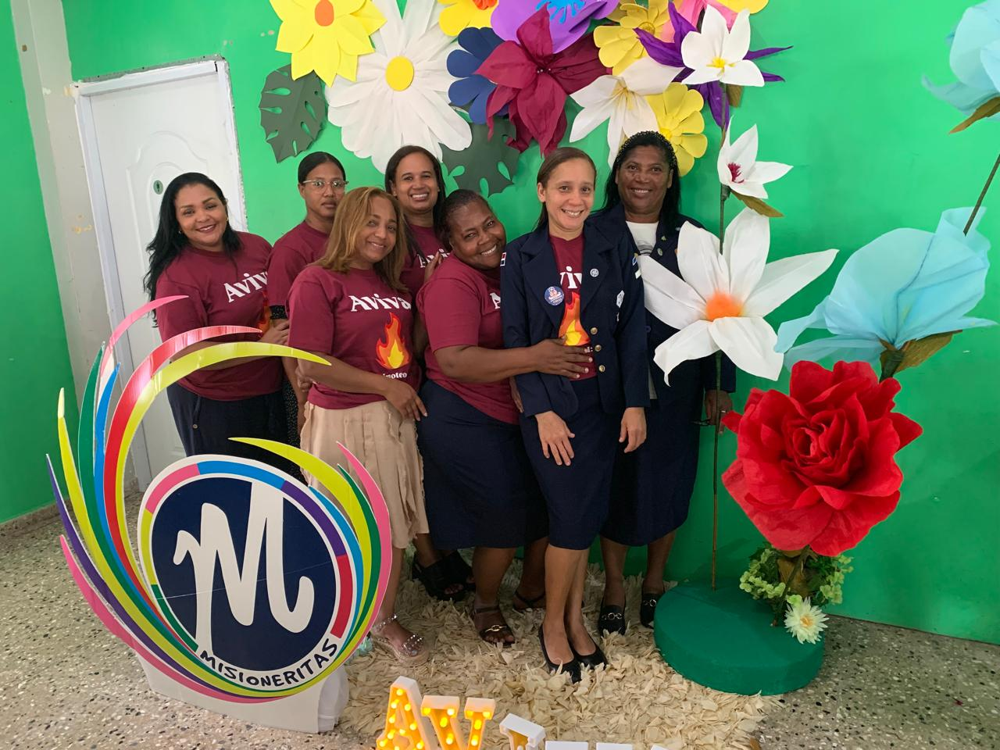

Pequeñas Misioneras con Grandes Corazones
El Ministerio "Misioneritas" es un programa emocionante y educativo para niñas, diseñado para inspirarlas a
amar a Dios, a aprender de la Biblia y a desarrollar un corazón misionero desde temprana edad. A través de
actividades divertidas, enseñanzas interactivas y proyectos creativos, las Misioneritas descubren el gozo de
servir a Dios y a los demás, preparándose para ser líderes cristianas en el futuro.

Nuestro Enfoque
Nos enfocamos en el crecimiento integral de cada niña, promoviendo:
- Conocimiento Bíblico: Enseñarles verdades fundamentales de la Biblia de manera creativa
y adaptada a su edad.
- Desarrollo del Carácter Cristiano: Fomentar valores como el amor, la bondad, la
obediencia, el respeto y la honestidad.
- Espíritu Misionero: Inspirarles el deseo de compartir el evangelio y ayudar a otros,
tanto local como globalmente.
- Habilidades y Creatividad: Desarrollar talentos a través de manualidades, música,
historias y juegos.
Actividades Llenas de Diversión y Aprendizaje
Las Misioneritas disfrutan de una variedad de actividades, que incluyen:
- Reuniones semanales con lecciones bíblicas, juegos y canciones.
- Proyectos de manualidades y actividades de servicio para la iglesia y la comunidad.
- Eventos especiales, como campamentos de Misioneritas y días de reconocimiento.
- Actividades misioneras para aprender sobre diferentes culturas y cómo ayudar.
- Tiempos de cuento y teatro bíblico.
Nuestro Liderazgo Misioneritas
Conozca a nuestro equipo de liderazgo, dedicado a guiar a nuestro ministerio de misioneritas con sabiduría,
visión y conforme a los principios bíblicos. Cada uno de ellos sirve con un corazón apasionado por Dios y
por el crecimiento de su pueblo.

Ana Sosa Martinez
Presidenta
Cristian
Vice - Presidenta
Raquel Abreu Guerrero
Secretaria
Para más información sobre nuestra estructura de liderazgo y los pastores que nos sirven, por favor
contacte nuestra oficina central o revise nuestros estatutos disponibles en la sección de Recursos.
Galería de Fotos y Videos
Reviva los momentos más memorables de nuestros eventos, conferencias y actividades a través de nuestra
galería visual. Próximamente encontrará fotos y videos inspiradores que capturan la esencia de nuestro
ministerio de misioneritas.